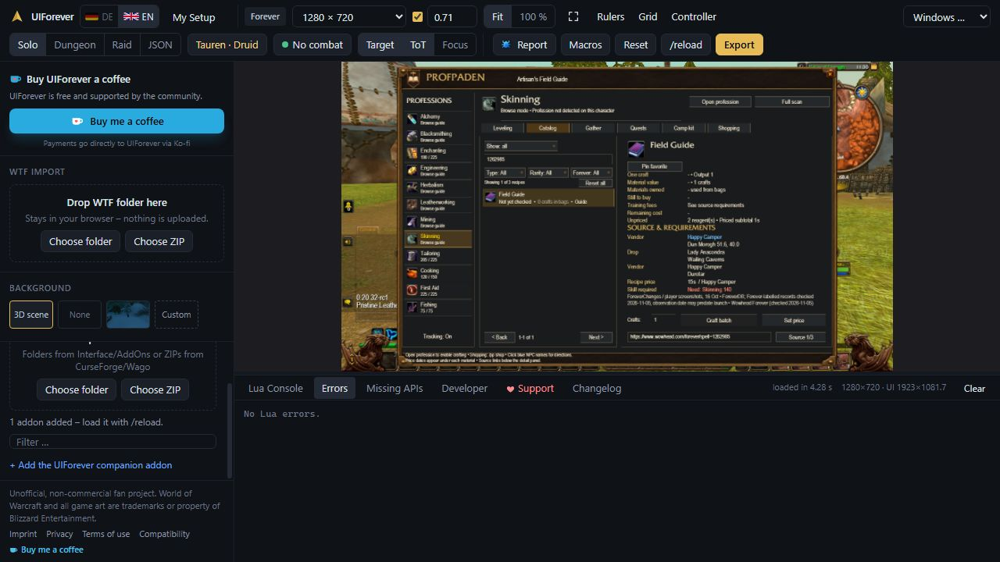

OFFLINE FUNCTIONAL REFERENCE / 0.20.32-rc1Newer profession item sources
Actual addon detail rows generated by Lua 5.1 tests. These text cards are an offline reference, not game screenshots.
966items checked389with published relationships503new item acquisitions17offline checks passed
All 54 newer materials remain browsable. The 577 items with no additional relationships retain prior data. Unknown locations remain unknown.
Simulator evidence
UIForever build 1.60.1.70450 / interface 16001. No Lua errors or missing APIs were listed after the checked states. Its existing map-texture limitation remains.

Coverage, provenance and limitations
Enchanting / 1328948
Vendor | [Alynsia]
Redridge Mountains 11.2, 71.6
Requirement | Honored with Azeroth Commerce Authority (Alliance)
Recipe price | 180 Merchant's Favor
Skill required | Need: Enchanting 280
Wowhead Forever (checked 2026-11-05)
Skinning / 1262985
Vendor | Happy Camper
Dun Morogh 51.6, 40.0
Drop | Lady Anacondra
Wailing Caverns
Vendor | Happy Camper
Durotar
Recipe price | 15s / Happy Camper
Skill required | Need: Skinning 140
ForeverChanges / player screenshots, 16 Oct • ForeverDB; Forever-labelled records checked 2026-11-05; observation date may predate launch • Wowhead Forever (checked 2026-11-05)
Mining / 1262975
Vendor | Happy Camper
Dun Morogh 51.6, 40.0
Drop | Relic Guardian
Excavation Site: Wetlands
Vendor | Happy Camper
Durotar
Recipe price | 15s / Happy Camper
Skill required | Need: Mining 140
ForeverChanges / player screenshots, 16 Oct • ForeverDB; Forever-labelled records checked 2026-11-05; observation date may predate launch • Wowhead Forever (checked 2026-11-05)
Herbalism / 1262980
Vendor | Happy Camper
Dun Morogh 51.6, 40.0
Drop | Shadetooth
Excavation Site: Wetlands
Vendor | Happy Camper
Durotar
Recipe price | 15s / Happy Camper
Skill required | Need: Herbalism 140
ForeverChanges / player screenshots, 16 Oct • ForeverDB; Forever-labelled records checked 2026-11-05; observation date may predate launch • Wowhead Forever (checked 2026-11-05)
Enchanting / 1263056
Vendor | Happy Camper
Dun Morogh 51.6, 40.0
Drop | Rath'mael
Ruins of Lordaeron
Drop | Shade of the Archmage
Alterac Mountains
Drop | [Charlga Razorflank]
Razorfen Kraul
Entrance: The Barrens 42.9, 90.2
Vendor | Happy Camper
Durotar
Recipe price | 15s / Happy Camper
Skill required | Need: Enchanting 140
ForeverChanges / player screenshots, 16 Oct • ForeverDB; Forever-labelled records checked 2026-11-05; observation date may predate launch • Wowhead Forever (checked 2026-11-05)
Engineering / 255007
Item / bags | [Golem Isospring] x0
Engineering | Skill 65 / recipe requirements
USED IN ENGINEERING / 1 RECIPE
Recipe | Skill | Per craft
Harvester Override Signalcaster | 65 | 4
SOURCES
5 published drop entries checked: 2026-10-20. Wowhead rates pool seasons.
Source | Method | Locations
[Harvest Golem] | Loot | Westfall
[Harvest Watcher] | Loot | Westfall
[Harvest Reaper] | Loot | 2 locations
[Rusty Harvest Golem] | Loot | Westfall
[Decrepit Harvester] | Loot | Tirisfal Glades
Blacksmithing / 249391
Item / bags | [Pyrite] x0
Blacksmithing | Skill 80-250 / indirect ingredient
INGREDIENT CHAIN
Make | [Sulfuric Acid]
Alchemy
For Blacksmithing | Acolyte's Gloves (80)
Crusader's Gloves (80)
Guard's Gloves (80)
Justicar's Gauntlet (175)
Justicar's Pauldrons (210)
Justicar's Sabatons (240)
Justicar's Waistguard (250)
Justicar's Wristguards (225)
Officer's Gauntlet (175)
Officer's Pauldrons (210)
Officer's Sabatons (240)
Officer's Waistguard (250)
Officer's Wristguards (225)
Prefect's Gauntlet (175)
Prefect's Pauldrons (210)
Prefect's Sabatons (240)
Prefect's Waistguard (250)
Prefect's Wristguards (225)
Protector's Gloves (80)
Sentinel's Gauntlet (175)
Sentinel's Pauldrons (210)
Sentinel's Sabatons (240)
Sentinel's Waistguard (250)
Sentinel's Wristguards (225)
Veteran's Gloves (80)
Warder's Gauntlet (175)
Warder's Pauldrons (210)
Warder's Sabatons (240)
Warder's Waistguard (250)
Warder's Wristguards (225)
SOURCES
Source | Method | Locations
Copper Vein | Mine | 24 locations
Large Chunk of Amber | Mine | Teldrassil
Tin Vein | Mine | 4 locations
Silver Vein | Mine | 3 locations
Incendicite Mineral Vein | Mine | Wetlands
Iron Deposit | Mine | 3 locations
Tin Vein | Gather | Unrecorded
Copper Vein | Gather | Unrecorded
Leatherworking / 249427
Item / bags | [Pristine Leather] x0
Player tests in October 2026 report Pristine Leather on characters up to level 25, including gray beasts; higher-level characters reported missing drops. This does not restrict the route.
Leatherworking | Skill 60-295 / recipe requirements
USED IN LEATHERWORKING / 80 RECIPES
Recipe | Skill | Per craft
Brawler's Leather Belt | 60 | 2
Defender's Leather Belt | 60 | 2
Stormrider's Leather Belt | 60 | 2
Totemic Leather Belt | 60 | 2
Trapper's Leather Belt | 60 | 2
Wisdom's Leather Belt | 60 | 2
Brawler's Leather Gloves | 75 | 2
Defender's Leather Gloves | 75 | 2
| Page 1 / 10 | Next >
SOURCES
5 skinning sources checked: 2026-10-20 (Wowhead Forever).
Additional previously recorded sources are retained.
Source | Method | Locations
[Daggerfang] | Skin | Loch Modan
[Snarlflare] | Skin | Redridge Mountains
[Lakota'mani] | Skin | The Barrens
[Thunderstomp] | Skin | The Barrens
[Echeyakee] | Skin | The Barrens
[Son of Arugal] | Loot | Silverpine Forest
[Daggerfang] | Loot | Loch Modan
[Bloodhound Runt] | Loot | The Hall of Thanes
[Moonrage Sentry] | Loot | Silverpine Forest
[Savannah Matriarch] | Loot | The Barrens
[Owatanka] | Loot | The Barrens
[Zhevra Charger] | Loot | The Barrens
[Hecklefang Snarler] | Loot | The Barrens
[Moonrage Darkrunner] | Loot | Silverpine Forest
[Sunscale Scytheclaw] | Loot | The Barrens
[Rabid Dire Wolf] | Loot | 2 locations
[Deviate Adder] | Loot | Wailing Caverns
[Deviate Coiler] | Loot | The Barrens
[Lost Barrens Kodo] | Loot | The Barrens
[Deviate Lurker] | Loot | Unrecorded
[Foreststrider] | Loot | Darkshore
[Blood Seeker] | Loot | Shadowfang Keep
[Shadow Charger] | Loot | Shadowfang Keep
[Cliff Stormer] | Loot | Stonetalon Mountains
[Great Goretusk] | Loot | 2 locations
[Zhevra Runner] | Loot | The Barrens
[Oasis Snapjaw] | Loot | The Barrens
[Sunscale Screecher] | Loot | The Barrens
[Fleeting Plainstrider] | Loot | The Barrens
[Deviate Ravager] | Loot | Wailing Caverns
[Ornery Plainstrider] | Loot | The Barrens
[Black Dragon Whelp] | Loot | Redridge Mountains
[Deviate Guardian] | Loot | Wailing Caverns
[Hecklefang Hyena] | Loot | The Barrens
[Deviate Crocolisk] | Loot | Wailing Caverns
[Moonrage Glutton] | Loot | Silverpine Forest
[Ferocious Grizzled Bear] | Loot | Silverpine Forest
[Savannah Huntress] | Loot | The Barrens
[Deviate Python] | Loot | Wailing Caverns
[Moonstalker Sire] | Loot | Darkshore
[Deviate Dreadfang] | Loot | Wailing Caverns
[Stormsnout] | Loot | The Barrens
[Deviate Slayer] | Loot | The Barrens
[Ghostpaw Runner] | Loot | 2 locations
[Shadowfang Ragetooth] | Loot | Shadowfang Keep
[Son of Arugal] | Loot | Shadowfang Keep
[Coyote Packleader] | Loot | Westfall
[Deviate Stinglash] | Loot | The Barrens
[Greater Thunderhawk] | Loot | The Barrens
[Kolkar Packhound] | Loot | The Barrens
[Fel Steed] | Loot | Shadowfang Keep
[Singed Basilisk] | Loot | Stonetalon Mountains
[Thunderhawk Cloudscraper] | Loot | The Barrens
[Barrens Giraffe] | Loot | The Barrens
[Greater Plainstrider] | Loot | The Barrens
[Young Goretusk] | Loot | Westfall
[Rabid Thistle Bear] | Loot | Darkshore
[Loch Crocolisk] | Loot | Loch Modan
[Goretusk] | Loot | Westfall
[Mottled Worg] | Loot | Silverpine Forest
[Savannah Prowler] | Loot | The Barrens
[Moonstalker] | Loot | Darkshore
[Thistle Bear] | Loot | Darkshore
[Elder Black Bear] | Loot | Loch Modan
[Mottled Raptor] | Loot | Wetlands
[Shadowfang Moonwalker] | Loot | Shadowfang Keep
[Thunderhead] | Loot | The Barrens
[Pridewing Wyvern] | Loot | Stonetalon Mountains
[Ashenvale Bear] | Loot | 2 locations
[Bleak Worg] | Loot | Shadowfang Keep
[Foreststrider Fledgling] | Loot | Darkshore
[Starving Dire Wolf] | Loot | 2 locations
[Young Wetlands Crocolisk] | Loot | Wetlands
[Deviate Viper] | Loot | Wailing Caverns
[Giant Grizzled Bear] | Loot | Silverpine Forest
[Stormhide] | Loot | The Barrens
[Young Black Ravager] | Loot | Duskwood
[Darkshore Thresher] | Loot | Darkshore
[Hecklefang Stalker] | Loot | The Barrens
[Mangy Mountain Boar] | Loot | Loch Modan
[Shadowfang Whitescalp] | Loot | Shadowfang Keep
[Twilight Runner] | Loot | Stonetalon Mountains
[Wetlands Crocolisk] | Loot | Wetlands
[Deviate Stalker] | Loot | The Barrens
[Elder Mountain Boar] | Loot | Loch Modan
[Giant Foreststrider] | Loot | Darkshore
[Moonrage Whitescalp] | Loot | Silverpine Forest
[Shadowfang Glutton] | Loot | Shadowfang Keep
[Bloodsnout Worg] | Loot | Silverpine Forest
[Deviate Moccasin] | Loot | Wailing Caverns
[Ghamoo-ra] | Loot | Blackfathom Deeps
[Moonrage Bloodhowler] | Loot | Silverpine Forest
[Pridewing Skyhunter] | Loot | Stonetalon Mountains
[Servant of Ilgalar] | Loot | Redridge Mountains
[Vile Bat] | Loot | Shadowfang Keep
[Wild Buck] | Loot | Ashenvale
[Starving Mountain Lion] | Loot | 2 locations
[Slavering Worg] | Loot | Shadowfang Keep
[Deviate Creeper] | Loot | The Barrens
[Grizzled Thistle Bear] | Loot | Darkshore
[Vicious Gray Bear] | Loot | Hillsbrad Foothills
[Antlered Courser] | Loot | Stonetalon Mountains
[Deviate Venomwing] | Loot | Wailing Caverns
[Gray Bear] | Loot | 2 locations
[Shadowfang Darksoul] | Loot | Shadowfang Keep